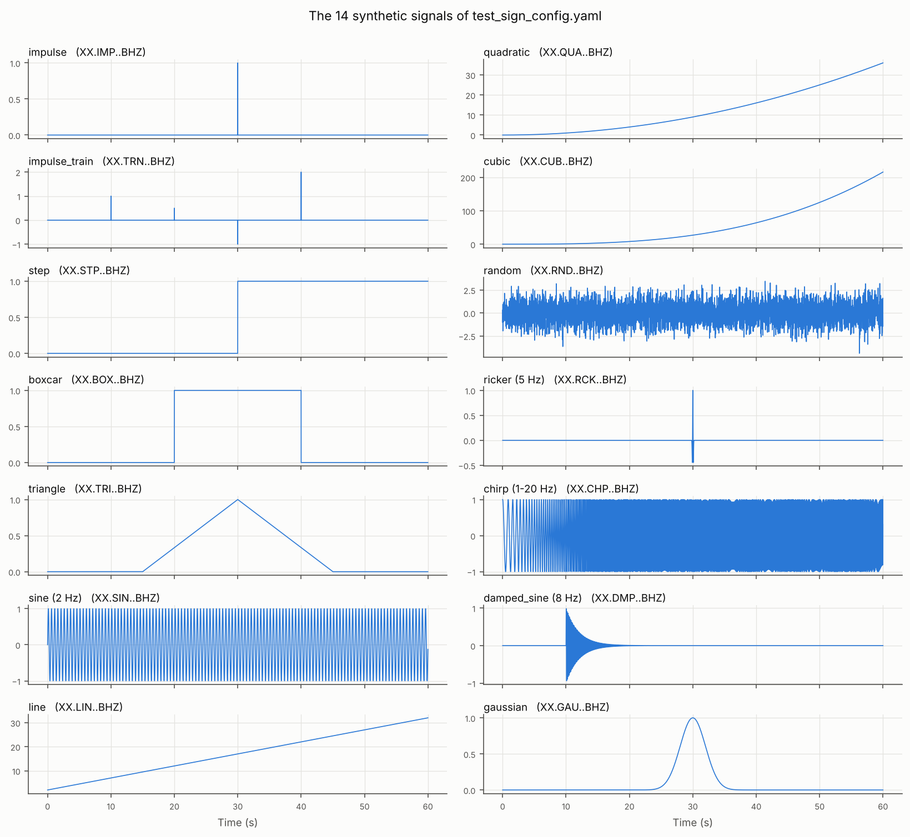
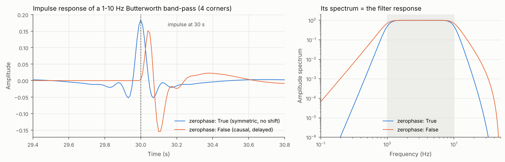
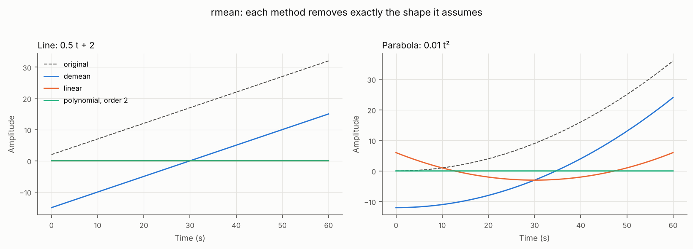
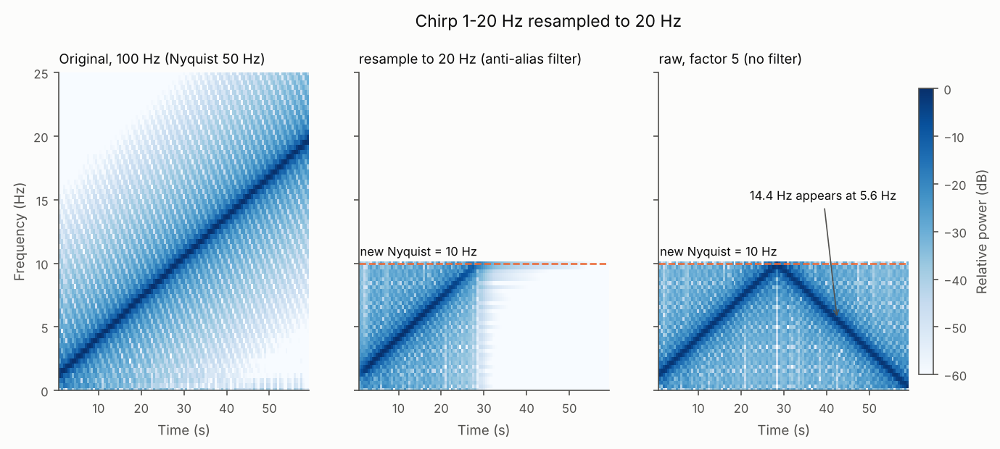
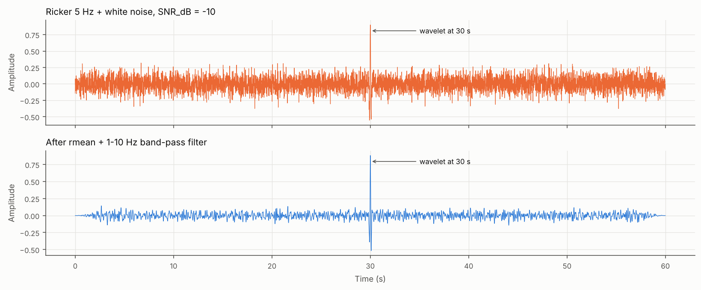
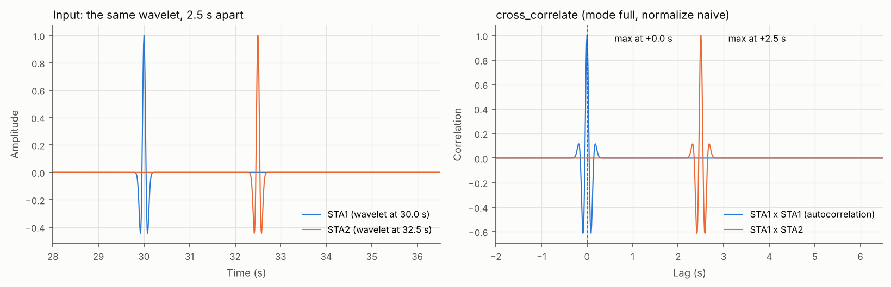

Synthetic Test Signals Tutorial 4
In this tutorial, we will learn how to generate synthetic signals with surfquake and use them to test what the processing methods do. We will work with the commands make_config, quick and specplot.
Why synthetic signals? With real data we never know exactly what the "true" signal is, so it is difficult to tell whether a result comes from the Earth, from the noise, or from the processing itself. With a synthetic signal we know the answer in advance: we know where the spike is, which frequencies the signal contains, and how many seconds one trace is delayed with respect to another. So we can check, step by step, that each method does what we expect, and learn what it does before applying it to real data.
In this tutorial we will:
- Generate and look at all the types of synthetic signals.
- See the impulse response of a filter, with and without phase shift.
- Check how detrending (
rmean) removes trends. - Watch aliasing happen when resampling without an anti-alias filter.
- Bury a wavelet in noise and recover it by filtering.
- Measure a time delay between two stations with cross-correlation.
- Combine synthetic signals with real data.
No data download is needed: all the traces are created by surfquake.
We will follow this structure:
- Config Files: tutorial4/configs
- Folder for the tutorial output: tutorial4/output, this will be created by surfquake.
--tutorial4
--configs
--test_sign_config.yaml
--plotting_config.yaml
--ex1_impulse.yaml
--ex2_trends.yaml
--ex3_aliasing.yaml
--ex4_noise.yaml
--ex5_delay.yaml
All the commands of this tutorial are run from the folder that contains tutorial4.
Please, first open a terminal, activate your environment and type the following command to overview all surfquake capabilities:
How synthetic signals work
A normal config file has an Analysis section with the processing steps. To generate synthetic traces, the config file has a Source section instead of (or in addition to) the Analysis section, and the command quick is run without -w: instead of reading files, surfquake builds the traces described in Source, and then processes them with the Analysis steps exactly as it would process real data.
Source: # what traces to create
trace_1:
...
trace_2:
...
Analysis: # (optional) how to process them, as with real data
process_1:
...
Each entry of Source (trace_1, trace_2, ...) creates one trace, in numerical order. An entry has two parts:
1. The header, which identifies the trace as in real data:
| Key | Description |
|---|---|
network, station, location, channel |
Trace codes, e.g. 'XX', 'IMP', '', 'BHZ'. Use a different station code for each trace: the output files are named after them. XX is the usual code for test networks. |
starttime |
UTC time of the first sample, 'YYYY-MM-DDTHH:MM:SS' (default 1970-01-01). |
sampling_rate |
Samples per second, in Hz (default 100). |
duration |
Length of the trace, in seconds (default 60). |
2. The signal: signal_type and its parameters.
signal_type |
Signal | Parameters | Good for testing |
|---|---|---|---|
impulse |
A single spike | amplitude, sample |
Impulse response of filters and instruments. |
impulse_train |
Several spikes | samples, amplitudes |
Repetitions, cepstrum, stacking. |
step |
0, then amplitude from the middle on |
amplitude |
Step response, integration, offsets. |
boxcar |
Rectangular pulse (1/3 to 2/3 of the trace) | amplitude |
Spectra (sinc), tapers, convolution. |
triangle |
Triangular pulse (25 % to 75 %) | amplitude |
Source time functions, smoothing. |
sine |
\(A \sin(2\pi f t + \phi)\) | frequency, phase, amplitude |
Filters, spectra, polarity. |
line |
\(\text{slope}\cdot t + \text{intercept}\) | slope, intercept |
Detrending. |
quadratic |
\(a t^2 + b t + c\) | a, b, c |
Polynomial detrending, integration. |
cubic |
\(a t^3 + b t^2 + c t + d\) | a, b, c, d |
Polynomial detrending. |
random |
Gaussian white noise | mean, std, seed |
Noise, spectral methods, coherence. |
ricker |
Ricker wavelet (zero phase) | frequency, time, amplitude |
A simple seismic "arrival": picking, correlation, detection. |
chirp |
Sine sweeping from f0 to f1 |
f0, f1, method, amplitude, phase |
Time-frequency analysis, aliasing, filter bands. |
damped_sine |
Decaying oscillation from time on |
frequency, decay, amplitude, phase, time |
Resonances, spectral peaks, wavelets. |
gaussian |
Bell-shaped pulse | sigma, time, amplitude |
Smooth pulses, smoothing, envelopes. |
Rules for the parameters:
timeis in seconds from the first sample, andsample/samplesare sample indices starting at 0. Both must lie inside the trace.- Frequencies are in Hz and must not exceed the Nyquist frequency (
sampling_rate/ 2). - Phases are in degrees.
seed(forrandom): an integer gives the same noise every run (reproducible),nulla different noise each time.
Generate Config Files
The template contains one example of every signal type, all documented. Let's prepare it, together with the plotting configuration:
surfquake make_config -h
surfquake make_config -c test_sign_config -o "./tutorial4/configs"
surfquake make_config -c plotting_config -o "./tutorial4/configs"
The plotting configuration is commented to explain the functionality, and the processing methods are described here for traces and here for streams.
Step 1: Generate and look at all the signals
The template can be run as it is: it creates 14 traces, one per signal type.
surfquake quick -h
surfquake quick -c "./tutorial4/configs/test_sign_config.yaml" --plot_config "./tutorial4/configs/plotting_config.yaml"
Note that there is no -w: the traces come from the Source section. Move through the pages with n and b.

To save the traces as files, use the automatic mode with an output folder:
The files are written in HDF5 format, named network.station.location.channel.D.year.julday.h5, for example XX.RCK..BHZ.D.2024.1.h5. They can be read like any other waveform file, with -w:
Step 2: The impulse response of a filter
An impulse contains all the frequencies with the same amplitude. So, if we filter an impulse, what comes out is exactly the filter itself: its impulse response. Its spectrum is the frequency response of the filter.
Create the file ex1_impulse.yaml:
Source:
trace_1:
network: 'XX'
station: 'IMP'
location: ''
channel: 'BHZ'
starttime: '2024-01-01T00:00:00'
sampling_rate: 100.0
duration: 60.0
signal_type: 'impulse'
amplitude: 1.0
sample: 3000 # the spike is at 30 s
Analysis:
process_1:
name: 'filter'
type: 'bandpass'
fmin: 1.0
fmax: 10.0
corners: 4
zerophase: True
surfquake quick -c "./tutorial4/configs/ex1_impulse.yaml" --plot_config "./tutorial4/configs/plotting_config.yaml"
Zoom around 30 s. Then open the prompt with v and look at its spectrum, which is the frequency response of the filter:
Now change zerophase: True to zerophase: False, and run it again. Close the window and type r in the terminal to reprocess with the new config, or run the command again.

What you should see:
zerophase |
Result |
|---|---|
True |
A symmetric wavelet centred exactly at 30.000 s, with energy before the impulse. |
False |
Nothing before 30 s; the wavelet starts at the impulse, its maximum is delayed (about 30.10 s) and it is not symmetric. |
What does this mean for real data?
A zero-phase filter (applied forwards and backwards) does not move the arrivals, so it is the right choice for picking times. But it spreads energy before the onset, which can make a first motion look earlier, or create a small "precursor". A causal filter never puts energy before the onset, so it is the choice for first-motion polarities and for onsets of very impulsive signals, but it delays and distorts the waveform.
Step 3: Removing trends
Real records often contain offsets and slow drifts. We will test the rmean methods with a line and a parabola, whose exact shape we know.
Create the file ex2_trends.yaml:
Source:
trace_1:
network: 'XX'
station: 'LIN'
location: ''
channel: 'BHZ'
starttime: '2024-01-01T00:00:00'
sampling_rate: 100.0
duration: 60.0
signal_type: 'line'
slope: 0.5
intercept: 2.0
trace_2:
network: 'XX'
station: 'QUA'
location: ''
channel: 'BHZ'
starttime: '2024-01-01T00:00:00'
sampling_rate: 100.0
duration: 60.0
signal_type: 'quadratic'
a: 0.01
b: 0.0
c: 0.0
Analysis:
process_1:
name: 'rmean'
method: 'demean'
Run it, then change method to 'linear', and finally to 'polynomial' with order: 2:
surfquake quick -c "./tutorial4/configs/ex2_trends.yaml" --plot_config "./tutorial4/configs/plotting_config.yaml"
What you should see (maximum absolute value left in the trace):
method |
Line (LIN) |
Parabola (QUA) |
Why |
|---|---|---|---|
| (no processing) | 32 | 36 | The original signals. |
demean |
15 | 24 | Only the mean is removed: the slope remains. |
linear |
~0 | 6 | A straight line is removed exactly; a parabola is not a line, so a curved residual remains. |
polynomial, order: 2 |
~0 | ~0 | A second-order polynomial fits both. |

Tip
Use the simplest method that removes your trend: high polynomial orders can also remove real long-period signals.
Step 4: Aliasing
When the sampling rate is reduced, frequencies above the new Nyquist frequency (half the new sampling rate) cannot be represented. They do not disappear: they fold back into the band and appear as false, lower frequencies. This is aliasing, and once it has happened it cannot be undone. A chirp, which sweeps all frequencies from 1 to 20 Hz, makes it easy to see.
Create the file ex3_aliasing.yaml. We resample the chirp from 100 Hz to 20 Hz (new Nyquist: 10 Hz) with the correct method, resample, which applies an anti-alias filter first:
Source:
trace_1:
network: 'XX'
station: 'CHP'
location: ''
channel: 'BHZ'
starttime: '2024-01-01T00:00:00'
sampling_rate: 100.0
duration: 60.0
signal_type: 'chirp'
f0: 1.0
f1: 20.0
method: 'linear'
amplitude: 1.0
Analysis:
process_1:
name: 'resample'
sampling_rate: 20
pre_filter: True
surfquake quick -c "./tutorial4/configs/ex3_aliasing.yaml" --plot_config "./tutorial4/configs/plotting_config.yaml"
Open the prompt with v and look at the spectrogram:
Now replace the resample step with a plain decimation, raw, which keeps one sample out of 5 without any filter:
Run it again and compare the spectrograms.

What you should see:
| Time | True frequency | resample (with anti-alias filter) |
raw (no filter) |
|---|---|---|---|
| 10–15 s | ~5 Hz | 5 Hz, full amplitude | 5 Hz, full amplitude |
| 40–45 s | ~14.4 Hz | removed (amplitude ~0) | appears at 5.6 Hz (= 20 − 14.4), full amplitude |
| 55–60 s | ~19.2 Hz | removed | appears at 0.8 Hz (= 20 − 19.2), full amplitude |
With raw, the spectrogram shows the sweep going up to 10 Hz and then coming back down, as if reflected by a mirror at the Nyquist frequency. Those false frequencies look perfectly real: in real data you could not tell them apart from true signals.
Warning
Always use resample (with pre_filter: True) to reduce the sampling rate for analysis. raw is only meant to speed up the plotting of long traces.
Step 5: Recovering a signal from the noise
We bury a Ricker wavelet (a simple model of a seismic arrival, centred at 5 Hz) in white noise, and recover it with a band-pass filter.
Create the file ex4_noise.yaml:
Source:
trace_1:
network: 'XX'
station: 'RCK'
location: ''
channel: 'BHZ'
starttime: '2024-01-01T00:00:00'
sampling_rate: 100.0
duration: 60.0
signal_type: 'ricker'
frequency: 5.0
time: 30.0
amplitude: 1.0
Analysis:
process_1:
name: 'add_noise'
noise_type: 'white'
SNR_dB: -10
process_2:
name: 'rmean'
method: 'linear'
process_3:
name: 'filter'
type: 'bandpass'
fmin: 1.0
fmax: 10.0
corners: 4
zerophase: True
First run it without the filter (delete or comment the process_3 block), then with it:
surfquake quick -c "./tutorial4/configs/ex4_noise.yaml" --plot_config "./tutorial4/configs/plotting_config.yaml"

What you should see (peak of the wavelet divided by the standard deviation of the noise):
SNR_dB |
Before filtering | After the 1–10 Hz filter |
|---|---|---|
| 10 | ~100 | ~220 |
| 0 | ~32 | ~72 |
| −10 | ~9 | ~23 |
The filter removes the noise outside the band of the wavelet, while keeping the wavelet: the peak-to-noise ratio improves by more than 2 times. White noise has energy at all frequencies, and the wavelet only between ~1 and ~12 Hz, so the narrower the filter around the signal, the larger the gain.
About SNR_dB
SNR_dB compares the noise with the mean power of the whole trace. A short pulse in a long trace has a very small mean power, so even SNR_dB: 0 leaves the pulse clearly visible. To create a difficult test with short signals, use negative values (−10, −20 dB).
Try it: lower SNR_dB until you cannot see the wavelet before filtering, and check whether you can still see it after. You can also test the characteristic functions on it (see Characteristic Functions), for example by adding an STA/LTA step:
Step 6: Measuring a time delay with cross-correlation
We create the same wavelet at two "stations", the second one 2.5 s later, as if the wave took 2.5 s to travel from one to the other. The cross-correlation should find that delay.
Create the file ex5_delay.yaml:
Source:
trace_1:
network: 'XX'
station: 'STA1'
location: ''
channel: 'BHZ'
starttime: '2024-01-01T00:00:00'
sampling_rate: 100.0
duration: 60.0
signal_type: 'ricker'
frequency: 5.0
time: 30.0
trace_2:
network: 'XX'
station: 'STA2'
location: ''
channel: 'BHZ'
starttime: '2024-01-01T00:00:00'
sampling_rate: 100.0
duration: 60.0
signal_type: 'ricker'
frequency: 5.0
time: 32.5
Analysis:
process_1:
name: 'cross_correlate'
mode: 'full'
normalize: 'naive'
reference_idx: 0
trim: True
To see the result against the lag time, open the plotting configuration and set:
surfquake quick -c "./tutorial4/configs/ex5_delay.yaml" --plot_config "./tutorial4/configs/plotting_config.yaml"

What you should see:
XX.STA1_STA1..BXZ: the autocorrelation of the reference, with its maximum (1.0) at lag 0 s.XX.STA1_STA2..BXZ: the cross-correlation, with its maximum (1.0) at lag +2.5 s: STA2 records the wave 2.5 s after STA1.
Try it: change time of the second trace, or add noise to both traces with add_noise before the correlation, and check that the peak stays at the right lag.
Why normalize: 'naive'?
With normalize: 'full', each lag is divided by the local energy of the traces. The synthetic traces are exactly zero far from the wavelet, so that energy is zero and the result is undefined (NaN). Real data, and synthetic traces with noise added, always have some energy, so full works for them.
Step 7: Combining synthetic signals with real data
A powerful test is to inject a synthetic signal of known shape into real noise, for example to know the smallest event your detector can find. It is done in two runs:
-
Generate the synthetic trace and save it. Give it a
starttimeinside the time window of your real data, and the samesampling_rate: -
Read the real data and the synthetic files together with
-w(paths separated by a comma), and process them as usual:
To add the synthetic signal onto a real trace (signal + real noise in the same trace), use the algebra method, e.g. expression: "tr1 + tr2". See Processing Stream.
Note
When -w is given, the Source section of the config file is ignored: generation only happens without -w.
Using Bash script
Finally, we can run all the exercises at once and save their results with a bash script file. Create a file named run_synthetic.sh:
#!/bin/bash
set -e
# Activate your conda environment
eval "$(conda shell.bash hook)"
conda activate surfquake # Replace with the name of your environment
for exercise in ex1_impulse ex2_trends ex3_aliasing ex4_noise ex5_delay; do
echo "Running $exercise"
surfquake quick -c "./tutorial4/configs/$exercise.yaml" -o "./tutorial4/output/$exercise" -a
done
Open a terminal in your working directory and run it:
Discussion
Synthetic signals turn processing into an experiment with a known answer:
- Filters: an impulse shows what a filter really does, and the price of zero phase (energy before the onset) or causal filtering (delay and distortion).
- Detrending: each method removes exactly the shape it assumes, and leaves the rest.
- Resampling: without an anti-alias filter, high frequencies become false low frequencies that look completely real.
- Noise: filtering in the band of the signal recovers signals that are invisible in the raw trace.
- Correlation: a known delay is recovered exactly, which validates the timing of your whole processing chain.
Whenever you are not sure about a new method or a combination of parameters, test it first on a synthetic signal: if it does not give the expected answer on a signal you know, it will not give a reliable answer on real data.